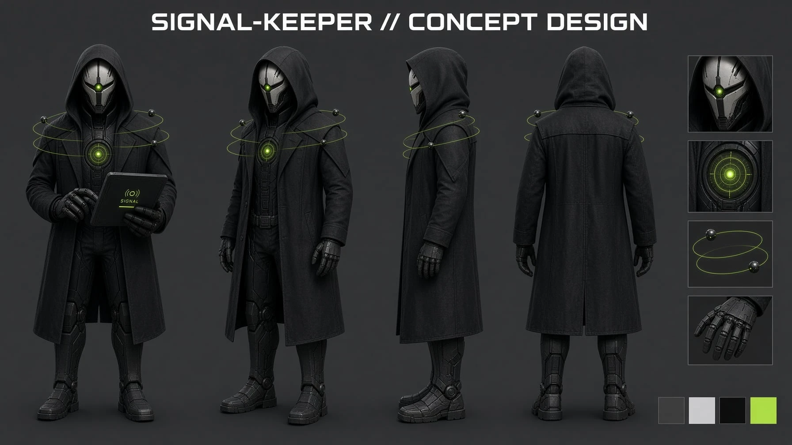
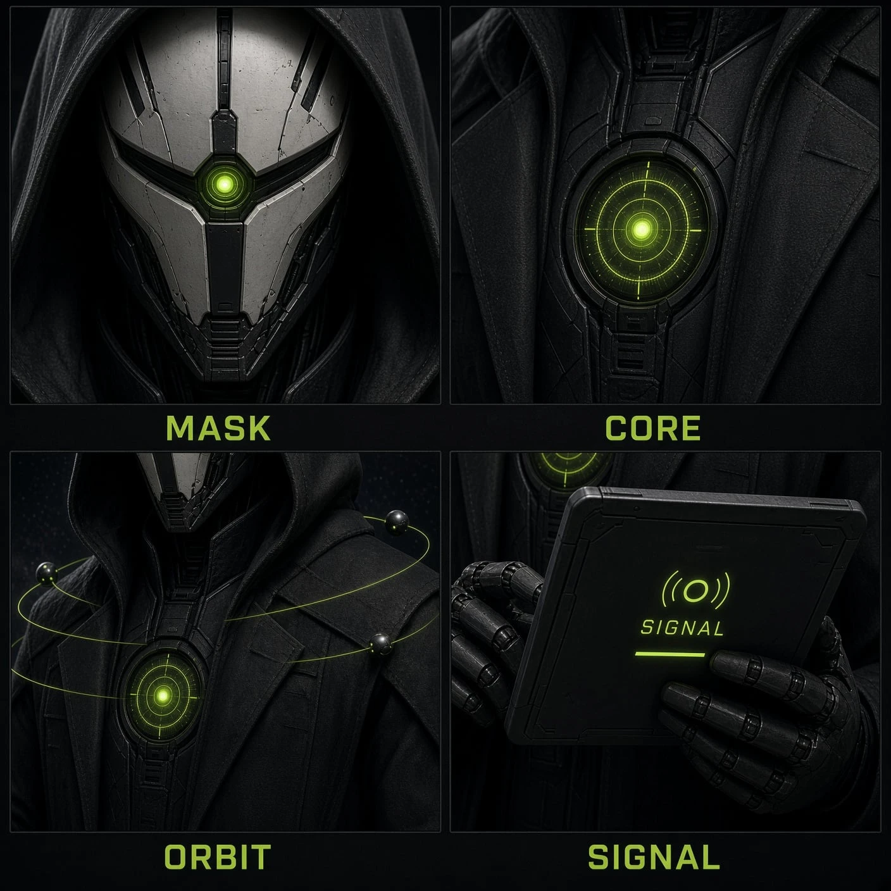
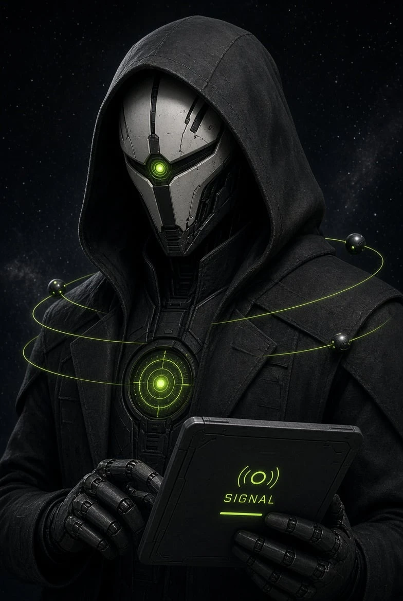
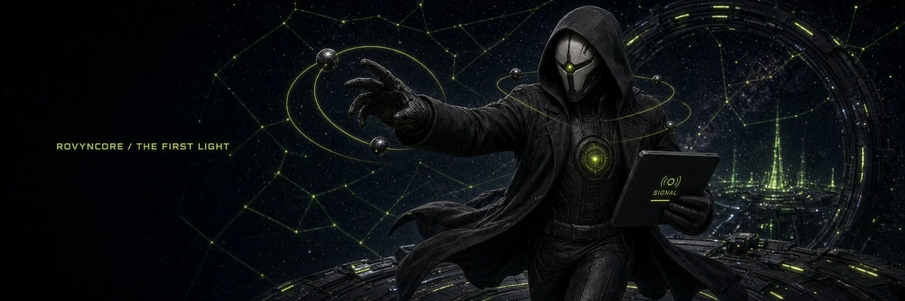

這份文件是 docs/lightdive/ART-ASSETS.md 第 4、5 節（Signal-Keeper、介面素材）的詳細版。NFT 圖（探索者、光塔、稜鏡）仍以 ART-ASSETS.md 第 1–3 節為準。
每一項素材都用同一個結構寫：
| 段落 | 回答的問題 |
|---|---|
| 敘事 | 這張圖在 Lightdive 的世界裡是什麼東西、為什麼存在。 |
| 遊戲中的位置 | 玩家在哪個畫面、什麼時刻看到它；它要幫玩家做什麼判斷或感受什麼情緒。 |
| 構圖與內容 | 畫面裡每一個元素、位置、比例，以及哪些區域必須留給介面。 |
| 光與色 | 光從哪裡來、什麼顏色、多亮；哪些地方不能太亮。 |
| 分層與規格 | 尺寸、格式、圖層拆法、檔名。拆層是為了讓程式能做動態效果，不是形式要求。 |
| 程式會做什麼 | 交付後程式會在上面加什麼動態，讓你知道哪些部分不用畫、哪些部分必須分開。 |
| 禁止事項 | 這一項特有的地雷，加上第 02 章的全域禁止清單。 |
| 提示詞 | 建議的生圖提示詞（英文）。只是起點，請依工具調整，並把最後實際用的版本記錄下來。 |
| 驗收清單 | 交付前自己逐項打勾；開發端放進遊戲後也會用同一份清單檢查。 |
你負責「只有畫得出來才有的東西」：氛圍、材質、角色、場景。程式負責「會動、會變、會跟數字連動的東西」：介面框線、數字、光橋、粒子、閃爍、稀有度光效、按鈕。所以這份文件常常會要求「這裡留空」「這裡不要畫光暈」「這部分拆成獨立圖層」。這些要求的目的，是讓同一張圖在遊戲裡能活起來。
| ID | 素材 | 主要用在 | 數量 | 主尺寸 | 優先 |
|---|---|---|---|---|---|
| A1 | 星圖背景 | 星圖畫面（選擇光源座標）、潛光動畫 | 1 | 4096×4096，3 層 | P1 |
| A2 | 觀測站主場景 | 首頁（觀測站）、等待揭曉畫面 | 2 | 3840×2160＋直式 2160×3840，5 層 | P1 |
| A3 | Signal-Keeper 立繪 | 新手引導、每日公告、潛光結果、賽季公告 | 5＋1 | 1024×1536 | P2 |
| A4 | 立繪發光層與分件 | 讓立繪的核心、眼睛、軌道會動 | （併入 A3） | 同 A3 | P2 |
| A5 | 六種屬性圖示 | 探索者卡、座標標記、同頻圖鑑、異相公告 | 6 | SVG（96 格網） | P1 |
| A6 | 光源座標圖示 | 星圖上的座標標記、深度選擇 | 7 | SVG（96 格網） | P2 |
| A7 | 卡背 | 鑄造揭曉（翻牌前）、等待隨機數 | 4 | 1024×1366 | P1 |
| A8 | 標題字標 | 遊戲首頁、載入畫面、分享圖、社群 | 2 | 向量（SVG／AI） | P2 |
| A9 | 分享圖 | X 貼文、網站連結預覽、結果分享底圖 | 2 | 1200×630（母檔 2400×1260） | P3 |
數量以「一個完整的素材單位」計算（例如 A1 的三個圖層合起來算 1 個）：A1 1、A2 2（橫式、直式）、A3 5、A5 6、A6 7（6 個深度＋發射台光點）、A7 4（卡背底圖＋3 個種類紋章）、A8 2（橫式、直式）、A9 2，合計 29 個。A3 的「＋1」是建議加做的引導姿勢 P6。A4 是 A3 每個姿勢的分層要求，不另計數量。
| 等級 | 什麼時候要 | 為什麼 |
|---|---|---|
| P1 | 測試網公開試玩之前 | 沒有它們，遊戲的主要畫面（觀測站、星圖、鑄造揭曉）只能用佔位圖。屬性圖示會出現在每一張探索者卡上，缺了會讓整個收藏系統看起來未完成。 |
| P2 | 公測期間陸續到位 | Signal-Keeper 是遊戲的臉，但第一版可以先用現有概念圖裁切代替；座標圖示可先用幾何佔位。 |
| P3 | 主網第一季開賣前 | 分享圖主要用在宣傳和上線活動。 |
遊戲會用一份素材清單載入所有圖片，缺圖時自動顯示佔位圖。所以素材可以一批一批交，不需要全部畫完才交；每交一批，開發端會在 1–2 天內放進測試網，並回傳桌機和手機的實機截圖給你確認。
在一片幾乎全黑的深空裡，光是唯一有價值的東西。
星系中心的 ROVYN CORE 發出第一道光（核光 RVYN），碎成千萬片沉進深空。觀測者在核心周圍建起光源觀測站、立起光塔，用共鳴稜鏡把晶核的光折成光橋，讓探索者順著光橋潛進深空，把光帶回來。這就是「潛光」。
「潛進深空，把第一道光帶回來。」Dive deep. Bring the First Light home.
所有美術判斷都可以回到這句話：黑暗是預設值，光是獎勵。畫面越暗、光越少，光出現時就越珍貴。這也正好對應遊戲的核心循環：玩家每天把探索者送進黑暗，等待他們帶光回來。
這個遊戲裡，光的顏色和形狀都有意義。請在所有素材裡遵守，玩家會在不知不覺中學會這套語言。
| 光 | 意義 | 用在哪裡 |
|---|---|---|
| 核光萊姆 | 核光 RVYN 本身：價值、收穫、系統的「生命」。 | 胸口核心、眼睛、光橋、軌道、成功結果。它是全遊戲唯一的品牌光色，其他光色都只能當配角。 |
| 白熱 | 強度的極限：核光濃到發白。 | 只用在核光萊姆的最亮中心點，以及「核光回響」等最高等級的結果。 |
| 六種屬性色 | 光源的種類（曦光、霧光、晶光、熾光、雷光、淵光）。 | 只出現在屬性圖示、座標標記、探索者光紋。不可以用在場景主光，否則會和核光萊姆搶。 |
| 熄滅 | 訊號中斷、航程結束。 | 光橋中斷、立繪「低頭」姿勢、已歸航的探索者。不是血紅、不是警報，只是光暗下去。 |
| 形狀 | 代表 | 例子 |
|---|---|---|
| 圓與同心環 | 觀測、訊號、核心 | 胸口瞄準環、星圖深度環、終端的 ((O)) 符號、軌道 |
| 細長橢圓軌道 | 穩定、守護、連結 | Signal-Keeper 的軌道環、光橋的弧線 |
| 垂直與分體 | 光塔、基地、時間 | 石碑、脊椎狀的分節板、刻度 |
| 三角與折射 | 稜鏡、選擇、風險 | 稜鏡座的三爪、光束的分岔 |
| 裂紋 | 古老、經歷、光從縫裡透出 | 面具裂紋、卡背接縫、石碑裂隙 |
| 名稱 | 色碼 | 用途 | 面積比例 |
|---|---|---|---|
| 深空黑 Void | #07090A | 最深的背景、深淵 | 約 75–85% |
| 夜炭 Night | #0B0C0E | 一般背景、介面底色（網站現有色） | |
| 炭灰 Charcoal | #2B2D30 | 布料、機械暗部、結構 | |
| 石灰 Stone | #6B6E68 | 古石結構的亮面（中間調） | 約 8–15% |
| 骨白 Bone | #D8D6CE | 面具、高光、少量點綴 | 約 2–5% |
| 核光萊姆 Core Lime | #C9FF55 | 品牌光色（網站主色，ART-ASSETS 已統一） | 約 2–5% |
| 深萊姆 Deep Lime | #4F7A00 | 萊姆光的暗部、反光、淺色底上的萊姆文字 | 少量 |
比例是整個畫面的參考值，不是每張圖都要精準符合。重點是：萊姆光一旦超過畫面的 10%，就不再珍貴。
| 屬性 | 建議色碼 | 意象 |
|---|---|---|
| 曦光 | #FFD27A | 黎明、初生、溫暖的第一道光 |
| 霧光 | #A9C4C2 | 被雲霧包住的光，柔和、隱約、看不清輪廓 |
| 晶光 | #7DE6FF | 結晶、折射、銳利的幾何 |
| 熾光 | #FF7A45 | 灼熱、恆星表面、餘燼 |
| 雷光 | #B28CFF | 瞬間、放電、分岔 |
| 淵光 | #5B6CFF | 深處的冷光，在黑暗裡幾乎看不見 |
屬性的外觀以文案行銷組《NFT 世界觀與故事 v3》第 3 節的 B 層光紋為準，該文件不在 repo 裡。上表是本文件提出的建議值，請先和 v3 及探索者 B 層的實際出圖比對，確定後兩邊統一使用。每個色碼都已確認在夜炭底色 #0B0C0E 上清楚可辨。
| 材質 | 描述 | 出現在 |
|---|---|---|
| 厚重織布 | 炭黑色粗紡羊毛，看得到織紋，邊緣略為磨損起毛，吸光、不反光。 | Signal-Keeper 的兜帽與大衣 |
| 陶瓷金屬 | 骨白、霧面、細微的髮絲裂紋和使用痕跡，裂縫裡是黑色。像古老的禮器，不像塑膠。 | 面具 |
| 黑色機械 | 分節、啞光黑金屬加少量光澤邊緣，關節處有細縫。 | 手套、胸口脊椎板、終端外殼、軌道球 |
| 古石 | 深灰玄武岩或片岩，風化、分層、有裂隙；表面刻有細線刻度。 | 觀測站結構、光塔（與 NFT 一致） |
| 晶體 | 半透明，內部有光，邊緣銳利。 | 晶核、胸口核心的鏡片、稜鏡 |
以下規則適用於本文件所有素材（沿用 ART-ASSETS.md 與白皮書第 3.2 節的文案規則）：
| 項目 | 規定 |
|---|---|
| 色彩空間 | sRGB（IEC61966-2.1），8 bit／通道。不要用 Display P3、CMYK 或 16 bit 交付。 |
| 點陣圖 | PNG-24，透明素材要帶 Alpha 通道。不要先壓成 JPG 或 WebP，壓縮由開發端統一處理。 |
| 分層母檔 | PSD（或 Krita／Procreate 匯出的 PSD），圖層命名用本文件指定的名稱。 |
| 向量 | SVG 1.1，所有文字轉外框，不使用濾鏡、遮色片、內嵌點陣圖。附原始 AI 或 Figma 檔。 |
| 解析度 | 依各項規格；母檔一律用本文件寫的最大尺寸，不要先縮小。 |
| 發光（Bloom） | 除非該項另有說明，不要把大範圍的光暈畫死在圖裡。光暈由程式即時加上，才能隨事件變亮變暗。發光體本身要亮、邊緣要清楚。 |
| 透明邊緣 | 去背時邊緣不能殘留背景色（特別是綠色光暈外的灰邊或白邊）。做法見第 3.4 節。 |
沿用 ART-ASSETS.md 的命名精神：{類型}_{名稱}_{層或變體}.{副檔名}，全部小寫、英文、底線分隔。
Lightdive 是網頁遊戲，同一張背景要在桌機橫螢幕（16:9 到 21:9）和手機直螢幕（9:16 到 9:19.5）都好看。背景類素材（A1、A2）的做法是：
#808080）或純黑底，不要用場景背景。#0B0C0E（遊戲底色）、#808080、#FFFFFF。三種底色都不能看到灰邊或殘影。適合：A1 星圖背景、A2 觀測站場景、A3 立繪、A7 卡背底圖。生圖之後通常還需要修圖、補細節、統一色調和拆層，請預留時間。
不適合：A5、A6 圖示和 A8 字標。生圖工具做不出精準、可縮放、筆畫一致的向量圖示和文字，這幾項請由設計師用向量工具繪製（Figma、Illustrator、Inkscape 皆可）。生圖可以拿來找靈感。
授權：依 ART-ASSETS.md，生圖工具必須允許商用，並保留每張圖的生成紀錄（工具、版本、日期、提示詞、種子）。格式見第 13 章。
核光碎片沉進了星系深處。觀測者用星圖記錄每一個光源的位置與深度：離核心越近越淺、越亮、越安全；越往外越深、越暗，但那裡的光源更罕見。星圖的中心就是光源觀測站和它背後的 ROVYN CORE。
星圖也是發射台的延伸：白皮書第 4.3 節寫到「每一次在發射台上的發行，星圖上就會多出一個光點」。所以這張圖要讓人感覺還有很多空位會被點亮，是一個會成長的宇宙。
| 時刻 | 玩家看到什麼 | 這張圖要幫玩家 |
|---|---|---|
| 選擇座標 | 整張星圖縮小到可見全貌，程式在上面畫出六層深度環、座標標記（A6）和屬性色（A5）。 | 一眼看出「越外圈越深」，並理解自己的隊伍能到哪一層（未達光度門檻的環會被程式調暗）。 |
| 放大查看某一層 | 畫面放大到某個深度環，可以拖曳平移。 | 每一層看起來不同，讓「往深處走」有探索感。 |
| 潛光出發 | 程式從中心畫出一道萊姆光橋，延伸到選定的座標，鏡頭跟著光橋移動。 | 中心要夠亮、夠有份量，光橋才有「從核心出發」的感覺。 |
| 異相公告（每日 00:00 UTC） | 部分座標的屬性改變，程式讓星雲局部變色、閃爍。 | 星雲要能被程式染色（所以需要灰階星雲層，見下方）。 |
從中心往外，畫面要有連續的變化：越往外越暗、越冷、越稀疏，但偶爾出現的光點越亮、越純。這是遊戲平衡的視覺化：深層需要更高的總光度才能前往（白皮書第 4.3 節），回報略高。
| 深度 | 光度門檻 | 氣氛 | 星點密度 |
|---|---|---|---|
| I 淺層 | 0（任何隊伍） | 核心的萊姆餘暉最濃，帶一點暖白霧氣。安全、熟悉，像港口。 | 最密，但多為小而暗的星點 |
| II | 120 | 萊姆光退成淡淡的綠灰霧，開始出現細小的星雲紋理。 | 密 |
| III | 220 | 中性的深灰藍，星雲有明確的層次和縫隙。 | 中等 |
| IV | 380 | 冷色，星雲變成薄紗狀的絲帶，背景接近純黑。 | 稀 |
| V | 600 | 大片的黑，只有幾道冷藍色的遠方星雲。偶爾有一顆特別亮的孤星。 | 很稀，但有 3–5 顆明亮孤星 |
| VI 深淵 | 850（曜核級隊伍） | 幾乎全黑。極微弱的深靛色（淵光）在邊緣流動。看久了才會發現遠處有東西在發光。 | 極稀；2–3 處極亮、極小的純白光點 |
ui_starchart_L1_far.png：不透明。純黑底加遠方細小星點，不含星雲。最慢的視差層。ui_starchart_L2_nebula.png：透明背景，彩色星雲本體。ui_starchart_L2_nebula_gray.png：同一張星雲的灰階亮度版（透明背景），供程式在異相時重新染色。ui_starchart_L3_dust.png：透明背景，少量較大、略模糊的塵埃和亮星，放在最前面，移動最快，做出景深。數量少，覆蓋面積低於 10%。ui_starchart_master.psd，含上述三層。生圖工具通常無法一次產生 4096 正方形且結構正確的星圖。建議先生成 2048 的整體構圖，再分區放大（upscale／outpaint）補細節，最後在 PSD 裡依第 2 點的深度分區調整明暗。
光源觀測站建在 ROVYN CORE 的外圍，是觀測者和探索者出發的地方。它是一座古老而仍在運轉的設施：古石結構、精密的觀測儀器、從巨大圓形觀測窗透進來的核光。Signal-Keeper 在這裡守夜，接收深空的訊號，每天 00:00 UTC 公布新的光源座標和異相。
這裡是玩家的「家」。它要讓人感覺：安靜、可靠、有人在守著，而窗外是無邊的深空。每天回來這裡，就是遊戲的每日循環（白皮書第 4.1 節）。
| 時刻 | 畫面 | 這張圖要做到 |
|---|---|---|
| 每日首次進入 | 場景全畫面，Signal-Keeper（A3）站在左前方說話，上方是當日紀元、核光池等資訊，下方是隊伍卡和「出發潛光」按鈕。 | 提供氛圍和深度，不搶介面的注意力。 |
| 潛光出發 | 光橋從右側的「出發平台」射出，穿過觀測窗，消失在深空中。 | 出發平台的位置要明確（見錨點），光橋的路徑上不能有遮擋。 |
| 等待揭曉（最多約 1 小時） | 場景保持顯示，觀測窗裡可以看到遠方的光橋仍在延伸，倒數計時。 | 這是玩家停留最久的畫面，要耐看。 |
| 結果揭曉 | 光從觀測窗湧回來，場景短暫被照亮（程式加光）。 | 場景的亮部要分層（L5），程式才能讓它「被點亮」。 |
| 元素 | 描述 |
|---|---|
| 深空 | 觀測窗外是深空，與星圖（A1）的 I–II 層氣氛一致：核心的萊姆餘暉加上淡淡星雲。 |
| ROVYN CORE | 從觀測窗看出去，遠方有一顆極亮的萊姆色核心，部分被窗框或結構遮住，不要完整露出（保留神秘感）。它是整個場景的主光源。 |
| 觀測窗 | 一個巨大的圓形開口（直徑約為畫面高度的一半），框是分段的古石和金屬，內緣有一圈刻度。概念主視覺裡 Signal-Keeper 身後的環形結構可以當參考。 |
| 觀測站結構 | 中景兩側是古石柱、拱、階梯，表面有細線刻度與嵌入的萊姆色指示燈（細、小、稀疏）。建築要有尺度感：人只有柱子的五分之一高。 |
| 出發平台 | 右側中景一個略高的圓形平台，中央有晶核座。光橋從這裡射出（程式畫），所以平台要朝向觀測窗，且平台到觀測窗之間沒有遮擋物。 |
| 前景 | 地面是深色的石板，左前方留出空地給 Signal-Keeper 站立（他是獨立的圖，會疊上去）。前景可以有一台觀測儀器或星圖桌的局部，邊緣被裁出畫面，增加景深。 |
ui_observatory_{wide|tall}_L1_sky.png：深空與星雲（不透明），不含核心。…_L2_core.png：透明背景，ROVYN CORE 本體（無光暈）。程式會讓它緩慢呼吸。…_L3_structure.png：透明背景，觀測窗、石柱、拱、出發平台。…_L4_foreground.png：透明背景，地面、前景儀器。移動最多，做出景深。…_L5_lights.png：黑底，只有結構上的萊姆指示燈、刻度發光、平台晶核。程式用相加模式疊加，揭曉時讓它們一起變亮。手機直式不是把橫式裁窄。直式版本要重新安排：觀測窗在上半部（中心約在高度 35%），Signal-Keeper 站位在左下（他在手機上會縮小成對話框頭像，所以站位可以較小），出發平台在右下，下方 40% 是介面區。

Signal-Keeper 是光源觀測站的守夜人（白皮書第 3.3 節）。他接收深空傳來的訊號、校對星圖，每天公布新的光源座標與異相。他從不離開觀測站，是唯一一直在那裡的人。他不是商人、不是導師，而是值得信任的見證者：他看著每一位探索者出發，也看著他們歸航。
| 元素 | 設定（白皮書第 3.3 節） | 在立繪裡的作用 |
|---|---|---|
| MASK 面具 | 過濾核光的觀測面罩，和探索者頭盔同一系譜。 | 他沒有臉，所以情緒只能靠頭部角度、核心亮度、軌道球狀態表達。 |
| CORE 核心 | 胸口嵌著一片晶核，所以聽得見深空的光。 | 情緒的主要指標：平靜時穩定、興奮時強烈、中斷時閃爍變暗。 |
| ORBIT 軌道 | 三顆軌道球是他的信標，用來穩住光橋。 | 光橋的狀態直接反映在軌道上：穩定、排成一列、散開、掉落。 |
| SIGNAL 訊號 | 終端上顯示每天的光源座標與異相。 | 終端是他和玩家溝通的工具；螢幕內容由程式顯示（四種語言）。 |
定案：Signal-Keeper 是 NPC，不做成可交易 NFT（白皮書第 14.1 節第 14 項）。所以他的立繪不受 NFT 的稀有度、圖層系統限制。

| 部位 | 固定特徵 |
|---|---|
| 兜帽 | 深、尖頂、厚重炭黑織布，帽緣在面具周圍形成深黑的陰影框。 |
| 面具 | 骨白陶瓷金屬、髮絲裂紋。額頭到下巴一條黑色縱帶；黑色 V 形眉帶在眉心交會；眉心一顆圓形萊姆眼；兩頰黑色側板；下顎分節通氣格柵。沒有嘴、沒有第二隻眼睛。 |
| 胸口核心 | 圓形瞄準鏡片：同心環＋十字刻度，嵌在一條垂直分節的黑色脊椎板上。 |
| 大衣 | 長版炭黑風衣，寬翻領，腰帶，下襬到小腿。 |
| 手 | 黑色分節機械手套，每指三節，指尖略尖。 |
| 軌道 | 兩條極細的萊姆光環，傾斜環繞上身；環上共三顆亮黑色軌道球，每顆有一個萊姆小光點。 |
| 終端 | 深色堅固的平板，四角有護角。螢幕留空（只有微弱的萊姆底光），((O)) 符號移到外殼背面或邊框刻印。 |
軌道球數量：概念圖畫了四顆（每條環兩顆），白皮書寫「三顆軌道球」。立繪建議統一為三顆（上環兩顆、下環一顆），或請文案組把白皮書改成四顆。兩邊必須一致。
終端螢幕上的 SIGNAL 字樣：遊戲有四種語言，螢幕上的字由程式顯示才能翻譯，所以立繪的螢幕要留空。這也符合全域「圖裡不放文字」的規則。主視覺宣傳圖可以保留 SIGNAL 字樣。
五個姿勢的檔名、用途沿用 ART-ASSETS.md 第 4 節，這裡補上每一個姿勢的完整演出要求。
用途：預設姿勢。觀測站首頁、等待揭曉、普通成功、探索者歸航、一般提示。這是玩家看到最多次的一張，必須最耐看。
身體：正面微側（向畫面右轉約 15°），重心穩定，雙手在腰前輕握終端，終端螢幕朝下約 30°。頭部正對前方，略微低頭 5°，像在聆聽。
軌道：三顆球平均分布在兩條環上，環傾斜角度和概念圖相同。核心：中等亮度。眼睛：中等亮度。
情緒：安靜、專注、可靠。「我在這裡，訊號正常。」
用途：每日 00:00 UTC 紀元開始、公布光源座標與異相、潛光出發確認、新手引導中解釋規則。
身體：左手把終端舉到胸前、螢幕朝向觀眾（約正面偏右 20°），右手食指觸碰螢幕。頭部轉向終端，然後「看」向觀眾（面具朝向介於終端與觀眾之間）。
軌道：三顆球在上環上排成一直線，像在對準訊號；下環保持。核心：中高亮度。終端螢幕：亮（留空，程式會顯示座標與異相）。
情緒：正式、清楚、宣告。「今天的星圖是這樣的。」
螢幕區域在畫面上要夠大（至少 260×190 px），四角清楚可見，程式會把文字以透視方式貼上。請在 log 裡提供螢幕四個角的像素座標。
用途：明亮收穫、罕見光焰（白皮書第 4.4 節的成功結果）。
身體：頭部抬起約 15°，面具望向畫面右上方的深空（光橋返回的方向）。右手微微舉起，掌心朝上，像在迎接；左手持終端放低。
軌道：三顆球都亮起萊姆光（球本身從黑色轉為帶光的黑晶），軌道環變亮、變粗一點。核心：高亮度。
情緒：喜悅但克制。他不歡呼，只是抬頭看著光回來。「他們把光帶回來了。」
用途：光橋中斷（倍率 0 的結果）、網路或交易錯誤、隨機種子延遲。
身體：頭部低下約 25°，肩膀微微下沉。雙手垂放，終端在身側，螢幕朝下。
軌道：環線出現斷口（約環的四分之一斷開），一顆球偏離軌道、略往下掉，另兩顆失去光點。核心：低亮度。眼睛：低亮度但沒有熄滅。
情緒：惋惜、沉著。不是失敗、不是死亡、不是悲劇。這是遊戲裡常見的結果（廣域 15%、針芒 45% 的機率），玩家明天還會再出發。「訊號斷了。下一次。」
用途：核光回響（針芒光束 0.8%、8–10 倍，全遊戲最稀有的時刻）、賽季開始公告、重大消息。也可作為第一季主視覺的素材。
身體：雙臂向兩側張開約 45°，手掌朝前，終端浮在身前或掛在腰側。頭部微微後仰。兜帽被核心的光照亮內側，大衣下襬向後揚起，像被光的壓力推動。
軌道：環的半徑擴大約 1.4 倍，三顆球亮成白熱。核心：最大亮度，中心白熱、外圈萊姆。眼睛：最大亮度。
情緒：敬畏、莊嚴。這是整個遊戲最戲劇化的一張。「核心在回應。」
用途：新手引導。Signal-Keeper 站在畫面左側，需要「指向」右側的介面元件（例如「出發潛光」按鈕、星圖的某一層）。P2 的手指的是自己的終端，無法引導玩家看別處。
身體：身體轉向畫面右側約 40°，右臂向右前方伸出，手掌張開、掌心朝右前（引導，不是指控）。頭部轉向伸手的方向。
軌道：一顆球沿手臂方向飄出，像在為玩家照路。
| 遊戲事件 | 姿勢 | 程式加的效果 |
|---|---|---|
| 首次進入、新手引導 | P1 → P6 | 逐句對話、指向的介面元件發光 |
| 每日紀元開始、異相公告 | P2 | 螢幕顯示座標、異相屬性圖示 |
| 潛光出發 | P2 | 光橋射出 |
| 等待揭曉 | P1 | 軌道球緩慢運轉、核心規律呼吸 |
| 普通成功（1.0–1.2 倍） | P1 | 核心亮一下 |
| 明亮收穫 | P3 | 軌道球亮起、粒子 |
| 罕見光焰 | P3 | 更強的光、場景燈光層全亮 |
| 光橋中斷 | P4 | 燈光閃爍後變暗 |
| 核光回響 | P5 | 全畫面白熱、慢動作、專屬音效 |
| 探索者歸航（航程用完） | P1 | 核心緩慢變暗再恢復，名字刻上星圖名冊 |
| 賽季開始 | P5 | 全畫面演出 |
| 錯誤、延遲 | P4 | 輕微版本，不閃爍 |
#E6E4DC。_body.png、發光層 _glow.png、軌道後半 _orbit_back.png、軌道前半 _orbit_front.png（詳見 A4）每一張都要貼上附錄 A 的角色設定段落，再加上該姿勢的描述。以 P2 為例：
#0B0C0E、#808080、#FFFFFF 上都沒有灰邊。Signal-Keeper 沒有臉，他的「表情」全部來自光：核心的亮度、眼睛的閃動、軌道球的運轉。如果光被畫死在圖裡，立繪就只能是一張靜止的圖。拆成獨立圖層後，程式可以：
這是遊戲裡最有效的「精緻感」來源，成本卻只是多拆幾個圖層。
| 檔案 | 內容 | 重點 |
|---|---|---|
_body.png | 角色本體，所有發光部位處於「關燈」狀態：核心是暗色玻璃、眼睛是暗色鏡片、終端螢幕是黑的。不含軌道環和軌道球。 | 透明背景。關燈狀態要畫出玻璃、鏡片的質感，這樣光淡出時看起來是「熄滅」，不是「消失」。 |
_glow.png | 只有發光：核心的同心環與十字刻度、眼睛、終端螢幕的底光，以及這些光投在附近布料和面具上的反光。 | 純黑底（不透明）。程式用相加模式疊加，黑色等於不發光。發光體邊緣要清楚，不要畫大範圍光暈。 |
_orbit_back.png | 軌道環被身體擋住的那一半（在身體後方的弧線）。 | 透明背景。疊在本體下面。 |
_orbit_front.png | 軌道環在身體前方的那一半，加上三顆軌道球（每顆球單獨一個圖層，放在 PSD 裡）。 | 透明背景。疊在本體上面。PSD 裡每顆球獨立，程式會沿著環的橢圓重新擺放它們。 |
#C9FF55；核心正中心可以接近白色 #F4F6EE。眼睛同理。核光碎裂後沉入深空，在不同的環境裡變成六種不同性質的光源（白皮書第 4.5 節）。每一個光源座標都有一種屬性；每位探索者身後的光紋（NFT 的 B 層）也帶有一種屬性。當探索者潛向與自己屬性相同的座標，就會「同頻」。
| 位置 | 顯示尺寸 | 玩家要做的判斷 |
|---|---|---|
| 探索者卡（收藏、編隊） | 24–32 px | 這位探索者是什麼屬性。 |
| 星圖座標標記 | 16–24 px（縮小時）、48 px（放大時） | 這個座標是什麼屬性、和我的探索者同不同頻。 |
| 異相公告（Signal-Keeper 終端上） | 48–64 px | 今天哪些座標的屬性變了。 |
| 同頻圖鑑（6 屬性 × 6 深度） | 64–96 px | 我收集了哪些組合。 |
| 鑄造揭曉 | 96–128 px | 剛抽到的探索者是什麼屬性。 |
在星圖縮小時，屬性圖示可能只有 16 px。六個圖示的外輪廓必須彼此明顯不同，不能只靠顏色區分（約 8% 的男性有色覺辨識困難，而且異相時程式會改變顏色）。請先用純黑剪影檢查：六個剪影縮到 16 px 放在一起，每個都要能一眼認出。
造型必須與探索者 B 層光紋（v3 第 3 節）一致；以下是當 v3 沒有規定時的建議方向。
| 屬性 | 英文檔名 | 意象 | 造型建議（外輪廓） |
|---|---|---|---|
| 曦光 | dawn | 黎明、初生、溫暖 | 半圓（地平線上升起的光）加上三到五道短放射線。下緣是平的。 |
| 霧光 | mist | 被包覆、隱約、柔和 | 三條水平、略帶波浪的層疊弧線，中間一個被遮住一半的小圓。外輪廓寬而扁。 |
| 晶光 | crystal | 結晶、折射、銳利 | 直立的六角或菱形晶體，內部一條折射線。外輪廓是唯一的尖銳多邊形。 |
| 熾光 | blaze | 灼熱、恆星、餘燼 | 一個實心圓，外圍一圈不規則、向上偏的熱焰輪廓。避免畫成「火」的卡通造型。 |
| 雷光 | thunder | 瞬間、放電、分岔 | 一條斜向、有兩個分岔的折線光（像放電的路徑），而不是常見的閃電符號。 |
| 淵光 | abyss | 深處、冷、隱藏 | 一個空心的同心環（外粗內細），中心一個極小的點：深井往下看到的一點光。 |
icon_attr_{dawn|mist|crystal|blaze|thunder|abyss}.svg，viewBox 為 0 0 96 96currentColor#0B0C0E 底上光源座標是潛光的目的地（白皮書第 4.3 節）。座標分成六個深度，越深需要越高的總光度才能前往。每個在 RovynCore 發射台發行的代幣，也會在星圖上生成一個以它命名的光源座標：發射台和遊戲是同一個宇宙。
六個圖示是同一個系列，視覺上要「越深越複雜、越神秘」，讓玩家不看數字也能感覺到遞進。建議以「同心結構的層數」表現深度：
| 深度 | 檔名 | 造型建議 |
|---|---|---|
| I 淺層 | depth_1 | 一個簡單的圓環，中心空，最輕的視覺重量。 |
| II | depth_2 | 圓環＋內側一個實心小圓。 |
| III | depth_3 | 兩個同心圓環＋實心小圓；外環上一個缺口（指向光橋的方向）。 |
| IV | depth_4 | 三層結構，外環加上四個短刻度（類似胸口核心的瞄準刻度）。 |
| V | depth_5 | 四層結構，外環刻度增加到八個，內圈開始出現旋轉的弧段。 |
| VI 深淵 | depth_6 | 反轉：外面是粗實的環，裡面是深黑的空洞，正中心一個極小的亮點。整個系列裡唯一「往內看」的圖示，和淵光的意象呼應但不能相同（兩者會同時出現）。 |
| 發射台光點 | coord_launchpad | 與六個深度不同系：一個菱形或四芒星的光點，帶一道向上的細線（像剛被點亮、從下方升起）。它代表「別的世界的光」，要能一眼和遊戲本身的座標區分。 |
不要在圖示裡放羅馬數字或任何數字，深度數字由介面另外顯示（四種語言的格式不同）。
鑄造是兩個步驟（白皮書第 6.4 節）：玩家先申請，等隨機數來源回覆後才揭曉。在這段等待裡，卡片是一道「尚未解析的訊號」：觀測站已經接收到某個東西，但還看不清它是什麼。卡背就是這道訊號的封印。
這是遊戲裡最重要的兩個情緒高點之一（另一個是潛光揭曉）。演出流程如下，卡背要為每一步提供素材：
| 階段 | 畫面 | 卡背需要 |
|---|---|---|
| ① 申請 | 卡背從畫面下方升起，種類紋章亮起（光塔、稜鏡或探索者）。 | 中央紋章區、三種種類紋章（分開的圖層）。 |
| ② 等待隨機數 | 卡背緩慢呼吸，邊緣的刻度一格一格點亮（進度）。可能等幾分鐘。 | 邊緣有可以「點亮」的刻度環。 |
| ③ 預兆 | 揭曉前約 1.5 秒，光從卡背的接縫透出來，顏色和強度依稀有度不同（微光暗、曜核強且有稜彩）。這是「好像抽到好東西了」的興奮時刻。 | 接縫層：卡背上的裂縫或分割線，程式從這裡透出光。 |
| ④ 翻開 | 卡片翻轉，露出 NFT 圖。 | （NFT 圖，不在本文件範圍） |
| 檔名 | 種類 | 紋章造型 |
|---|---|---|
emblem_spire | 光塔 | 垂直、分體的石碑剪影，頂端一顆晶核。 |
emblem_prism | 共鳴稜鏡 | 三角形稜鏡，一道光從一邊射入、從另一邊分成三道射出（對應廣域、聚焦、針芒三種光束）。 |
emblem_seeker | 探索者 | 探索者頭盔的正面剪影（與 v3 探索者 F 層頭盔同系譜），或一個沿光橋向下潛的人形剪影。 |
紋章是「刻在石上、內部發光」的質感：凹刻的線條，線條內是萊姆光（發光部分另外拆成發光層）。
ui_cardback_base.png：不透明，卡背本體（含空的紋章凹槽、未點亮的刻度環）ui_cardback_seams.png：黑底白線，只有接縫和裂縫的形狀（白色＝光會透出的地方，線寬 2–6 px，有粗細變化）。程式依稀有度上色。ui_cardback_ticks.png：黑底，36 格刻度的發光形狀。程式逐格點亮。ui_cardback_emblem_{spire|prism|seeker}.png（透明背景，460×460）＋各自的 _glow.png（黑底發光層）| 稀有度 | 從接縫透出的光 |
|---|---|
| 微光 | 微弱的骨白色，只有主要接縫。 |
| 輝脈 | 萊姆色，主要接縫。 |
| 澄晶 | 明亮萊姆，主要與次要接縫都亮，卡片輕微震動。 |
| 稜光 | 萊姆，邊緣出現稜彩色散。 |
| 曜核 | 白熱中心加全稜彩，所有接縫爆亮，背景場景同步變暗。 |
接縫的設計直接影響這個演出有多好看：主要接縫要有明確的「裂開方向」，次要裂縫要多到曜核全亮時壯觀，但在底圖裡要細到幾乎看不見。
Lightdive 的意思就是遊戲的核心動作：潛進黑暗，把光帶回來。字標要在一眼之內傳達「光」與「下潛」兩個意象，並和 RovynCore 品牌（萊姆光、深色、精密）同一家族，但有自己的個性。
| 場景 | 尺寸 | 底色 |
|---|---|---|
| 遊戲首頁、載入畫面 | 寬 600–900 px | 深色場景 |
| 分享圖、社群貼文 | 寬 400–700 px | 深色 |
| 網站導覽列、頁尾 | 高 20–28 px | 深色或淺色 |
| 白皮書、文件封面 | 不定 | 白色 |
#D8D6CE 或純白，只有那一處光點或光線用核光萊姆。logo_lightdive_horizontal.svg、logo_lightdive_stacked.svg（主字標）；logo_lightdive_sub_{zh-hant|zh-hans|ko|en}.svg（副標，各自獨立）#111511＋深萊姆 #4F7A00）、單色版id="dive-light"）這是大多數人第一次接觸 Lightdive 的地方：朋友貼出的一個連結。它要在社群動態裡被一眼停下來看，並傳達「這是一個關於深空、光和探索的遊戲」。
白皮書第 12 章：宣傳只談遊戲與收藏，不寫報酬率、不暗示「穩賺」。分享圖不能出現金幣、上漲圖表、「賺取」「收益」等意象或字樣。
| 檔案 | 用途 | 內容 |
|---|---|---|
share_default.png | 遊戲頁面的固定預覽圖（Open Graph、X Card） | 完整成品：主視覺＋字標（A8）。這是唯一一張允許包含字標的點陣圖。 |
share_plate.png | 結果分享的底圖：玩家抽到曜核、或觸發核光回響時可以一鍵分享 | 只有背景氛圍，不含字標和文字。程式會在上面合成 NFT 圖、結果名稱、字標（依玩家語言）。 |
public/ 下的遊戲素材目錄），母檔另外保存。依 ART-ASSETS.md 的授權規則，每一張用生圖工具產生的素材都要有紀錄。每個資料夾放一個 log.csv，所有資料夾的紀錄彙整成根目錄的 CREDITS.csv。
| 欄位 | 內容 | 範例 |
|---|---|---|
asset_id | 素材 ID 與檔名 | A3 / npc_keeper_p2_signal_body.png |
tool | 工具名稱與版本 | （工具名稱）v6.1 |
license | 授權方案，以及是否允許商用 | Pro 方案，允許商用 |
date | 生成日期（UTC） | 2026-10-12 |
prompt | 實際使用的完整提示詞 | … |
negative | 負面提示詞 | … |
seed | 種子或生成 ID（工具有提供時） | … |
inputs | 參考圖或輸入圖的檔名 | ref/signal-keeper-turnaround.webp |
edits | 後製內容（修圖、拆層、合成）與操作者 | 修手指、拆發光層（王小明） |
anchors | 需要的錨點座標（A2、A3） | eye=512,292; core=512,688 |
fonts | 使用的字型與授權（A8、A9） | … |
以下事項需要在開始繪製相關素材之前決定。
| # | 事項 | 影響 | 建議 | 決定者 |
|---|---|---|---|---|
| 1 | 六種屬性的色碼與造型 | A5、A1 異相、探索者 B 層 | 以 v3 第 3 節為準；若 v3 未定義，採用本文件第 2.5、A5 章的建議 | 美術負責人＋文案組 |
| 2 | 軌道球數量（三顆或四顆） | A3、A4、主視覺、白皮書 | 三顆，與白皮書一致 | 美術負責人 |
| 3 | 終端螢幕上的 SIGNAL 字樣 | A3 | 遊戲內立繪螢幕留空；宣傳主視覺可保留 | 美術負責人 |
| 4 | 字標的韓文與英文副標 | A8 | 韓文待母語者確認；英文可不加副標 | 文案組 |
| 5 | 是否加做 P6 引導姿勢 | A3、新手引導體驗 | 加做；新手引導需要「指向介面」的動作 | 老闆 |
| 6 | 生圖工具與授權方案 | 全部 | 選定一個允許商用的方案並全程使用同一個工具，風格才會一致 | 老闆 |
每一批素材到位後，開發端會：放進遊戲並加上本文件「程式會做什麼」所描述的動態效果；回傳實機截圖；把定版素材登記到遊戲的素材清單；並同步更新 ART-ASSETS.md 的完成狀態。
生成任何 Signal-Keeper 圖時，都把這一段放在提示詞最前面，一個字都不要改，再接姿勢段落。這是讓五個姿勢看起來是同一個角色的最有效方法。如果工具支援角色參考圖，請同時附上四視圖（ref/signal-keeper-turnaround.webp）。
| 名稱 | 色碼 | 名稱 | 色碼 |
|---|---|---|---|
| 深空黑 | #07090A | 曦光 | #FFD27A |
| 夜炭 | #0B0C0E | 霧光 | #A9C4C2 |
| 炭灰 | #2B2D30 | 晶光 | #7DE6FF |
| 石灰 | #6B6E68 | 熾光 | #FF7A45 |
| 骨白 | #D8D6CE | 雷光 | #B28CFF |
| 核光萊姆 | #C9FF55 | 淵光 | #5B6CFF |
| 深萊姆 | #4F7A00 | 白熱 | #F4F6EE |


所有參考圖位於 docs/lightdive/source/ref/。